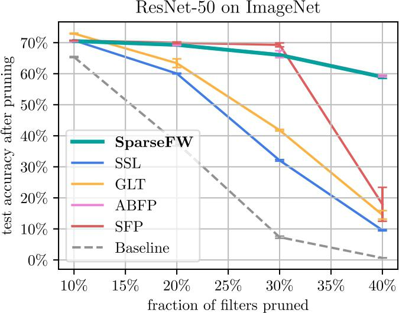
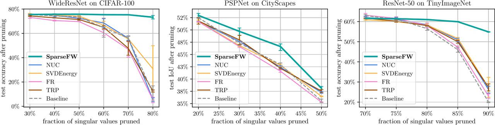
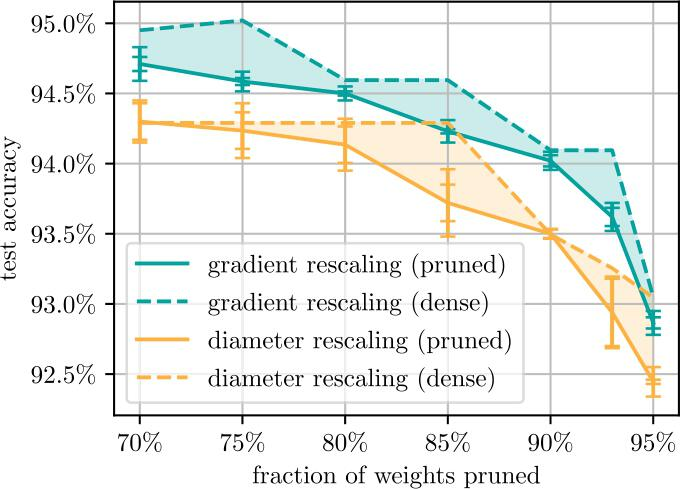

3 Experimental results
We trained convolutional architectures like Residual Networks [28] and Wide Residual Networks [77] on data sets including ImageNet-1K [62], TinyImageNet [41], CIFAR-100, CIFAR-10 [36], and PSPNet [81] on CityScapes [17]. Details on training setups and grid searches are in the Appendix A, following the pruning guidelines of Blalock et al. [8]. We averaged results over two seeds, reporting min-max bands for plots and standard deviations for tables. We used 10 % of the training data as a validation set for hyperparameter selection. Our code is available at github.com/ZIB-IOL/compression-aware-SFW.
In the compression-aware setting, we are interested in finding single hyperparameter configurations that perform well under a wide variety of compression rates, that is, without tuning hyperparameters for each sparsity. When comparing the performance for multiple compression rates at once, we have to decide how to select the “best” hyperparameter configuration. To that end, we select the configuration for each method that results in the highest on-average validation accuracy among all sparsities at stake.
3.1 Compression awareness: structured filter pruning
We apply the PFEC method [46] for convolutional filter pruning, sorting filters by their -norm and removing the smallest to achieve desired compression, maintaining uniform sparsity across layers. Unlike Li et al. [46], we adopt a One-Shot approach without retraining. Our approach, SparseFW, is compared to the natural baseline of momentum SGD training and several recent filter pruning methods: SSL [68] uses a group penalty, GLT [2] applies a group-lasso followed by soft-thresholding, ABFP [19] balances filter penalization and growth, and SFP [29] allows filter recovery by soft pruning after each epoch. SparseFW introduces group-k-support norm constraints, with hyperparameters for the feasible region’s radius and k, specifying the fraction of filters to activate in each convolutional layer per iteration. Nonconvolutional layers are optimized via SGD using default hyperparameters.
Figure 10.1 shows the accuracy-vs.-sparsity tradeoff for ResNet-50 trained on ImageNet-1K. SparseFW is able to converge to solutions that are robust to a wide range of filter pruning ratios, maintaining performance even at high sparsities, unlike most methods except ABFP. Detailed results for other datasets and architectures are in the Appendix A.

Figure 10.1 Accuracy-vs.-sparsity tradeoff curves for structured convolutional filter pruning on ImageNet. The plots show the parameter configuration with highest test accuracy after pruning when averaging over all sparsities at stake.
3.2 Compression awareness: low-rank decomposition
We compare SparseFW with spectral-k-support norm constraints to other approaches aiming for robustness to tensor decomposition. At the end of training, we prune the smallest singular values of each layer, replacing it with two layers matrix as described in the Appendix A. This corresponds to a uniform pruning approach, noting that there exist other ways to determine per-layer pruning ratios [48].
Apart from the standard momentum SGD with weight decay baseline, we examine low-rank methods like NUC [18] and SVDEnergy [3], which use nuclear norm regularization and singular value thresholding [11], respectively. Note that while the authors proposed to apply the thresholding after each epoch, we found it to be more effective when applying it after every iteration, however, at the cost of decreased efficiency. TRP [72] sets parameters to a low-rank representation periodically, the singular value pruning threshold being a hyperparameter. Force Regularization (FR) [69] forces convolutional filters to lie in a lower-dimensional subspace without having to compute the nuclear norm.
Figure 10.2 shows post-pruning test performance (accuracy or IoU) for WideResNet on CIFAR-100, PSPNet on CityScapes, and ResNet-50 on TinyImageNet across sparsity levels, indicating the fraction of pruned singular values. SparseFW consistently outperforms others, with minimal accuracy loss at high sparsity and negligible degradation at medium sparsity. For semantic segmentation, SparseFW reduces the IoU impact, however, also resulting in larger decreases, which we attribute to the usage of a pretrained backbone. Again, the performances correspond to the on-average best hyperparameter configuration.

Figure 10.2 Test performance-vs.-sparsity tradeoff curves for low-rank tensor decomposition on CIFAR100 (left), CityScapes (middle), and TinyImageNet (right).
Low-rank methods typically opt for either high-accuracy but costly singular value decomposition or more efficient, albeit less precise, approximations [73]. SparseFW addresses this tradeoff by focusing on the most significant singular vector-value pairs through k-SVD, optimizing for both precision and efficiency. The full SVD of an matrix demands operations, but computing k-SVD is more efficient for small [1]. Table 10.1 demonstrates SparseFW’s superior images-per-second throughput compared to methods like NUC, SVDEnergy, and TRP, which all require full SVD in each iteration, using consistent hardware (24-core Xeon Gold with Nvidia Tesla V100 GPU). FR, avoiding SVD, nearly matches regular training’s efficiency but generally underperforms. SparseFW’s throughput advantage is dependent on k, with efficiency reported for the k given by the on-average best performing hyperparameter configuration. We emphasize that we used a naive implementation of the k-SVD power method [6], noting that there are more sophisticated and faster algorithms to compute the k-SVD [1].
Table 10.1Training images-per-second throughput of the low-rank methods in comparison to the baseline of regular training.
| # training images per second | |||
| Method | CIFAR-10 | CIFAR-100 | TinyImageNet |
| Baseline | 5664 | 1197 | 756 |
| SparseFW (ours) | 1156 | 372 | 338 |
| NUC | 566 | 204 | 160 |
| SVDEnergy | 493 | 174 | 98 |
| FR | 4397 | 1140 | 742 |
| TRP | 565 | 199 | 159 |
3.3 The impact of the learning rate schedule
The learning rate determines the length of the parameter update relative to the size of the feasible region. This coupling between regularization strength and step size makes the tuning of the learning rate cumbersome. To decouple the tuning of the learning rate from the size of the feasible region, Pokutta et al. [57] propose two different learning rate rescaling mechanisms: diameter rescaling and gradient rescaling, the latter being used throughout our experiments in the preceding sections. While the former divides the learning rate by the -diameter of , gradient rescaling rescales the update direction length to that of the batch gradient, that is, .
The impact of normalization schemes on convergence and pruning robustness remains largely unexplored, especially since SFW’s learning rate directly influences the decay of nonactivated parameters. Figure 10.3 demonstrates that gradient rescaling surpasses diameter rescaling in maintaining test accuracy both before and after magnitude-pruning when applied with k-support norm constraints. We interpret this result in detail in the Appendix A. The following theorem lays the theoretical foundation by showing that incorporating the batch gradient norm into the learning rate leads to convergence of SFW at the specified rate, that is, the expected product of exact gradient norm and the Frank–Wolfe Gap
being the measure of convergence [60], decays at a rate of . The precise statement as well as a proof can be found in Appendix A.5.

Figure 10.3 ResNet-18 on CIFAR-10: For each pruning amount, the best hyperparameter configuration w. r. t. the accuracy after pruning (pruned) is depicted. The corresponding value before pruning (dense) is depicted as a dashed line.